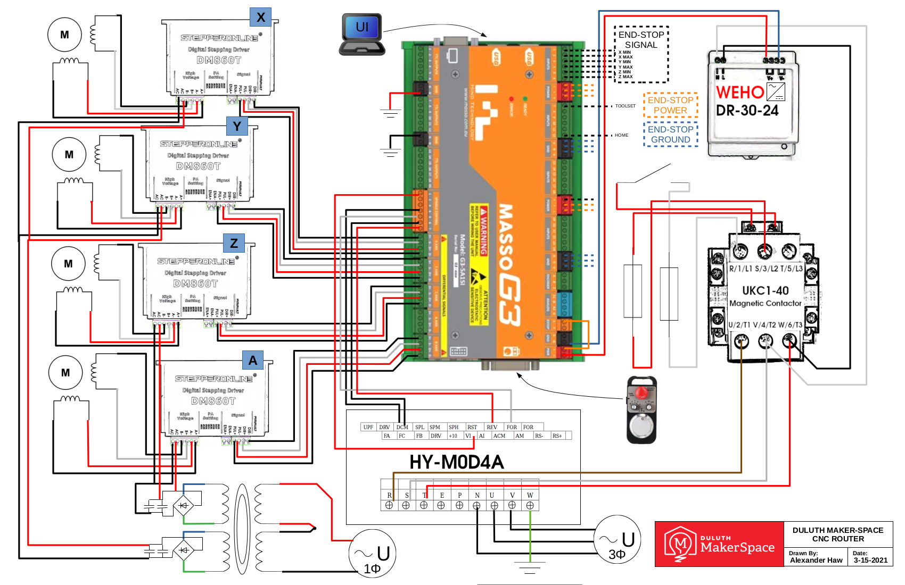
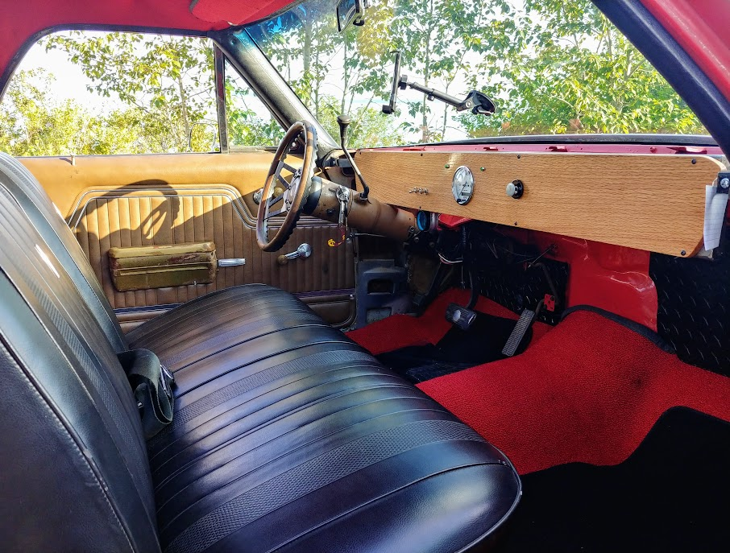
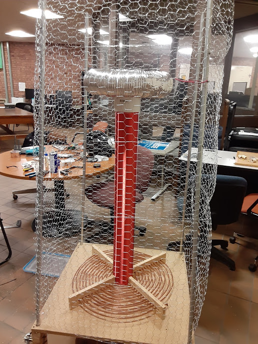
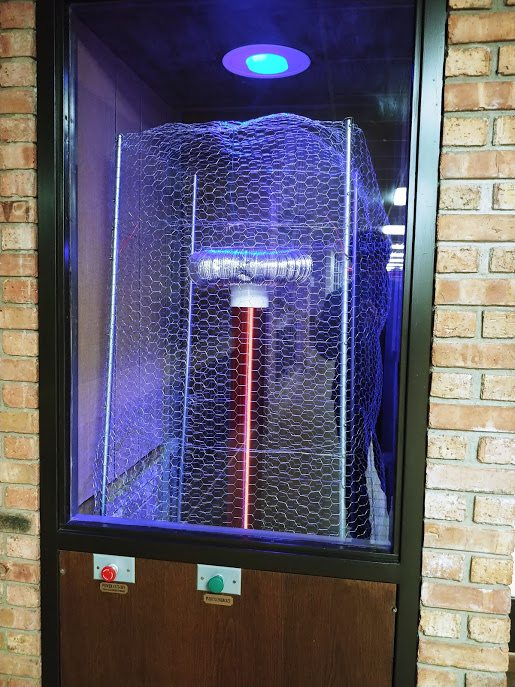

Alexander Haw¶
An advocate for fairness and responsibity in engineering.
- phone
Synopsis¶
Electrical Engineer with background in manufacturing, and operations, wiring design, and computer science.
Education¶
- B.S. Electrical Engineering
- Minor: Computer EngineeringUniversity of Minnesota Duluth 2017-2021GPA: 3.4
Experience¶
- R&D Production Engineer
- February 2023-March 2024
- Production Engineer
- July 2021-October 2022
- Production Engineering Intern
- May 2019-May 2021
- President of IEEE Student Chapter
- University of Minnesota DuluthSeptember 2019-May 2021
Skills¶
Manufacturing and Process Engineering
Engineering Drawings and Controlled Documents
Technical Writing
Programing Languages: Python, C++, VBA, PowerShell
Circuit Design and Analysis
Electronics Lab Experiments
Electrical Assembly, Fabrication, Troubleshooting
Windows and Linux
References¶
- Armin Beck armin.beck@nz.abb.com
Production Engineering Manager at ABB Napier
- John Matthews mail@johnmatthews.net
Engineering Equipment Manager at Zero Motorcycles
- Kellen Bolander kbolander@apavionics.com
Engineering and IT Manager at APA
- Katherine Rasley krasley@mnpower.com
President of IEEE Arrowhead Chapter
- Imran Hayee ihayee@d.umn.edu
Professor and Department Head at UMD Electrical Engineering Department
Projects¶
Senior Design Project: Long-Range ISM-Band File Transfer¶
This is a system of devices and an accompanying protocol for transferring files up to a kilometer away. My teammates and I developed this novel implementation of a common idea using several popular technologies including: Python, Raspberry Pi, LoRa, CAD, and FDM.

Capacitor Reformer¶
Before my time at ABB Napier, we had aquired several thousand large elecrolytic capcitors with a combined value of about $500,000. These were being consumed at a rate much lower than expected when they were purchased. This resulted in the capacitors staying in storage for upwards of two years - which was the manufacturer’s stated shelf life. They consequently manifested unacceptable leakage current once installed, leading to complications at the end-of-line test.
To remedy this and recover the value of the capacitors, I designed and (with the assistance of our test technicians) assembled a reforming fixture. This was ultimetely nothing but an apparatus that slowly charged and capacitors to their rated voltagem, then subsequently discharged them to allow safe storage.
Other tasks involved in this project included: coordinating with fabrication services to create custom parts, coordinating material movement and storage requirements with the warehouse staff, reviewing the safety features of the fixtures with R&D engineers (earth bonding for metal parts, isolation of energized components, PPE and measurement tool requirements, Job Safety Analysis form for first test run), documenting the design process, and composing an operating procedure.
Ultimately, this project was able to recoup almost all potential lost value; materials, labor, and transportation amounting to about 5% of the combined parts’ value.
XMC Microcontroller JTAG Programmer¶
At Zero Motorcycles, our vehicles utilized an ARM-based microcontroller for both the MBB and BMU. However, the microcontroller we used was being discontinued. This presented the following requirement in our manufacturing process: the ability to identify which unprogrammed IC was inside an ECU, then program and configure the ECU accordingly - all without the program user’s guidance. This would allow us to use up our existing stock of ECU’s then seamlessly introduce the new part without any manual intervention.
I developed a Python program for this, capable of identifying the IC via JTAG by reading its ID registers. It then flashed the correct firmware file based on this information, also using the JTAG interface. This poka-yoke was nescessary to eliminate any possibility of a mislabelled ECU recieving the incorrect firmware, leading to unexpected behavior. Once the ECU was programmed however, updates could be applied using the CAN interface.
Considerations were made for ease-of-use in the operator interface, utilizing barcode scanners instead of manual data entry, and traceability included by recording logs for each programming performed.
Reverse Engineering Duluth Maker Space CNC¶
The Duluth Maker space had recently installed a new CNC router in their wood-shop. In order to operate it however, they needed an electrical schematic for the city to approve. I was referred to this task by my friend Josh from APA. See below for the final product, made in Libre Office. I had a lot of fun working with the DMS staff on this!

El Camino Dashboard¶
In my sophomore year at UMD, I bought a 1977 Chevrolet El Camino as my daily driver. None of the dashboard insturments worked, so I set out to make a replacement. I stripped all of the internals from the cabin, and over a number of weeks created the final product to the left. I designed and fabricated everything you see from scratch.


Tesla Coil Interactive Display¶
The EE Lounge is where I spent much of my time between classes, so I made an effort to make it into an inviting place for learning and collaboration. There is a display case next to the entrance, which initially contained a monitor that had long-since stopped working. I took an abandoned Tesla Coil that was once a capstone project and replaced the monitor with it. I then built a Faraday Cage around the coil for safety, then added some buttons so that visitors can energize the coil themselves!
 
UMD EE Lounge Workspace¶
One of the most common grievances from EE undergrads at UMD is the lack of resources available to student for personal projects. This follows from the second most common comment: that there is a lack of hands on teaching in the curriculum. To help with this, I converted one of the UMD student areas to a workspace. This includes a workbench with tools for creating electronics, including a 3D printer.
CAN Bus Angle Sensor Tester¶
I created a device at APA to test angle sensors that use the CANopen protocol. These sensors are used in the junction boxes of one of our customers that produce heavy industrial equipment. This is based off the MCP2515 chip, coordinated by an Arduino Uno. This is used by our production team to create a test report to verify that the device is functioning properly upon leaving the plant.
Electronic Process Instruction Generator Program and Server¶
At APA, process instructions are typically written using a word processor. We recieved a large number of schematics for cables from a customer. These have very few components, in contrast to a typical wiring harness. I found that the amount of engineering work required to create process instructions for such a great number of practically identical assemblies was woefully inefficient, where every global revision could take several hours to update. This could be as simple as changing the length of a piece of heat-shrink tube. To make this operation easier, faster, and less susceptible to human error, I created a Visual Basic program that generates HTML documents from data stored in a spreadsheet. These documents are then served to the production staff from a Rasperry Pi running an Apache server. This reduced the workload on the engineering team several fold for this project.
ECO Checker Program¶
The APA engineering team composes sometimes hundreds of ECOs a day, which are synced to our ERP system following review. These are created by hand, and this led to an endless stream of typos and other various goofs that created an enormous bottleneck in the ECO integration process. I created a program that can by run at the click of a button that checks a long list of common errors in these ECO and alerts the engineer before it becomes a problem!

{kind=link}
{kind=link}
{kind=link}
{kind=link}